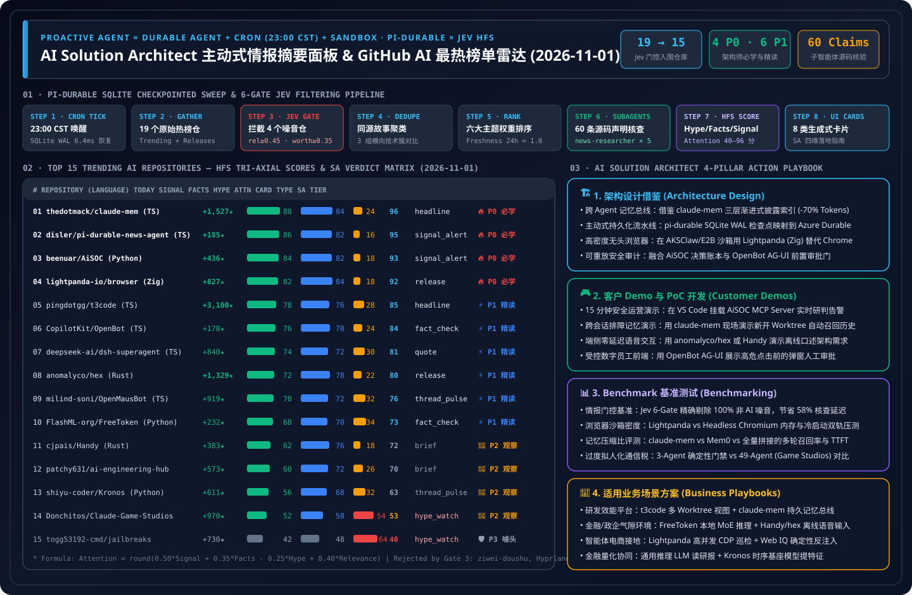

AI Solution Architect Proactive News Briefing & GitHub AI Trending Radar
Inspired by and extending disler/pi-durable-news-agent (SQLite Checkpointed Durable Pipeline + 6 Jev Deterministic Gates + Parallel Claim-Support Subagents + Hype / Facts / Signal Tri-Axial Scoring + 8 Generative UI Cards). Sweeps GitHub Trending daily at 23:00 CST, filters out clickbait, and evaluates every AI repository on (1) Worth Learning Verdict (P0–P3) and (2) Daily SA Work Application (Architecture Design, Customer Demo/PoC, Benchmarking, and Business Scenario Playbooks).
6-Gate Jev Filtering & Checkpointed Sweep Pipeline (The Agent Decides, The Task Runs)
Select any stage below to inspect the 2026-11-01 SQLite checkpoint state, gate thresholds, and rejected noise repositories.
Proactive Taste Tuner (Show Me More / Show Me Less & Live HFS Re-Ranking)
Replicating the pi-durable-news-agent taste feedback loop: adjust your AI Solution Architect domain weights or HFS coefficients to dynamically recompute Attention Scores and re-rank all 15 repositories in real time.
🎛️ SA Technical Domain Weights (Topic Multipliers)
Click 👍 More (+0.20×) or 👎 Less (-0.20×) to simulate natural-language taste steering (e.g., "Show me more agent memory & security, less game prompt packs").
📐 HFS Tri-Axial Scoring & Attention Formula Engine
Tune coefficients for Signal (actionability), Facts (primary source evidence), Hype (promotional penalty), and Relevance:
2026-11-01 GitHub AI Trending Deep Evaluation (15 Gate-Verified Repositories)
Filter by 8 Generative UI Card components, P0–P3 SA learning tiers, or keywords; each card embeds HFS progress bars, subagent claim verification ledgers, and 4-dimensional SA daily application playbooks.
Visual Summary Poster (SVG) & Sealed 7-Card 4:5 Benchmark Deck
Self-contained high-resolution SVG summary diagram and 7-Card 4:5 visual evaluation report.
📊 2026-11-01 GitHub AI Radar Architecture & HFS Matrix Summary (SVG)
Illustrating the 6-Gate durable sweep pipeline, Top 15 Signal/Facts/Hype matrix, and AI Solution Architect P0–P3 action roadmap.
